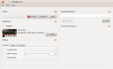

About
Bristolgui is a graphical user interface (GUI) for Bristol, written in ANSI C using the GTK+ library.
Bristol
is a synthesizer emulation package for Linux,
written and maintained by Nick Copeland.
Bristolgui is free software, licensed under the GPL v2. It is developed
and maintained by Martin Voigt, synthesizer images and descriptions are provided by Nick Copeland.
Features
- Clean, intuitive interface, preserving screen real estate
- Written in C with very few dependencies, thus suitable for older PCs and mobile linux devices
- Lets you manage multiple synthesizer configurations
- If you know how to mount an SSH folder, you can remotely control Bristol running on another computer in your studio.
- And, of course, the power of Bristol
Screenshots
These were taken from bristolgui-0.2.1.

|

|
 |
| Main Window | Synthesizer Chooser | A Typical Session |
{kind=link}
Download
The current version is bristolgui-0.2.1, released on 31.01.2011.
Binaries
Bristolgui is split into two packages: the GUI library and the bristolgui application.
If you'd like to contribute a build for your platform that is not available here, I'd be more than happy to include it. You can contact me here
Source Code
The downloadable packages include both the source code for lgui and bristolgui.
Both projects are also available on Github. The important branches are master
and unstable.
Master
always points to the ref we consider stable for the upcoming
release (this may be a beta, RC or a Release), while unstable
points to the current state of development and should at least compile and run.
All other branches are used internally, use
them at your own risk.
For more information please refer to the included README file.
Manual
To be done. For more details, refer to the Complete Manual